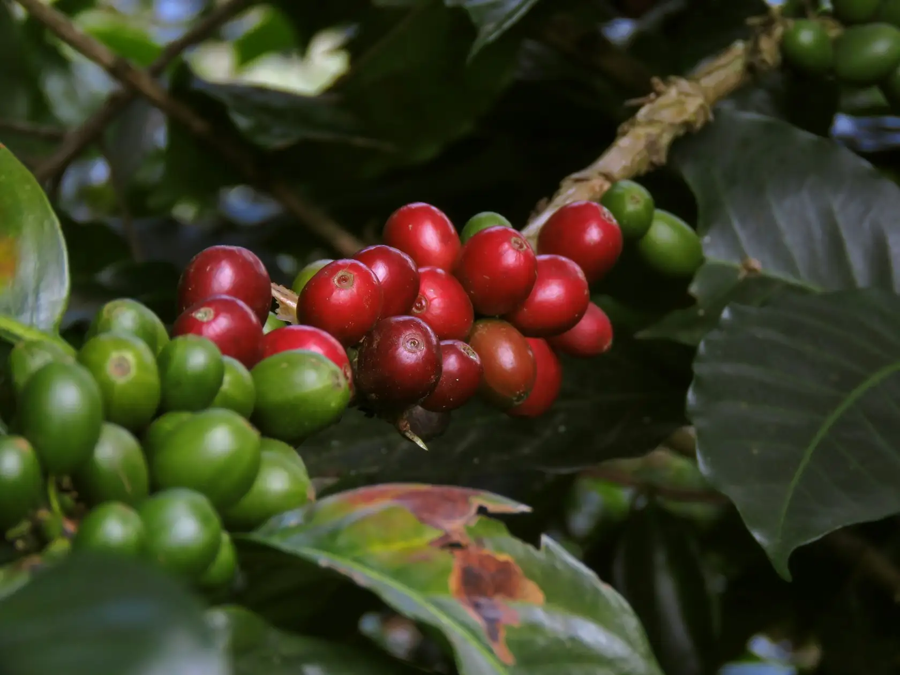
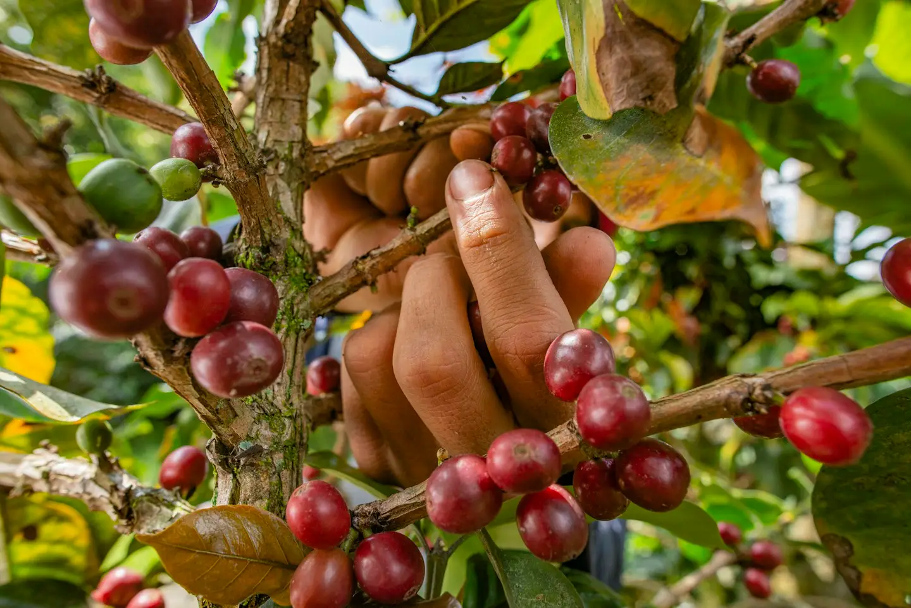
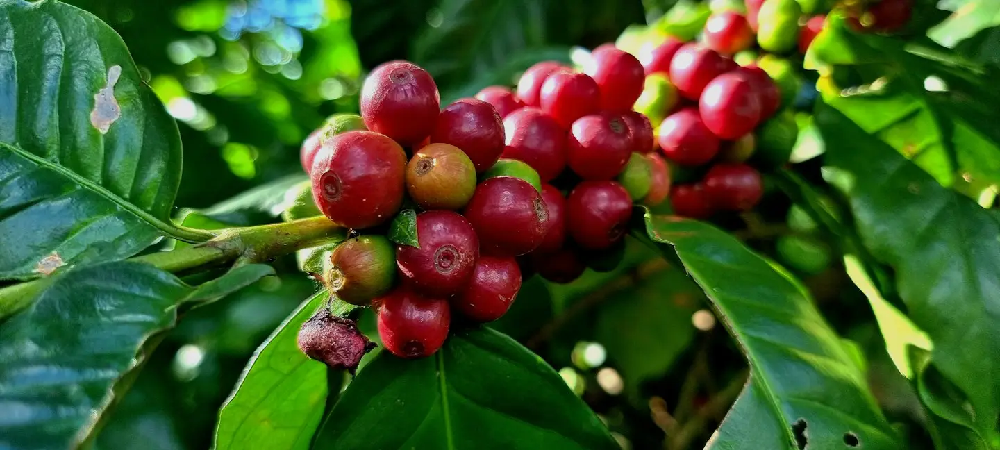
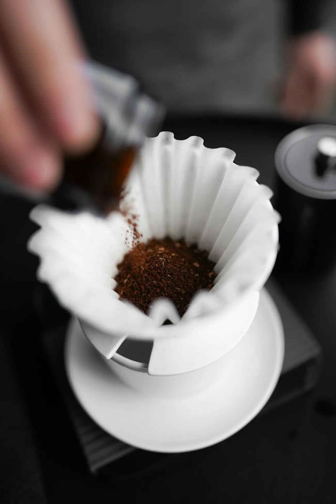
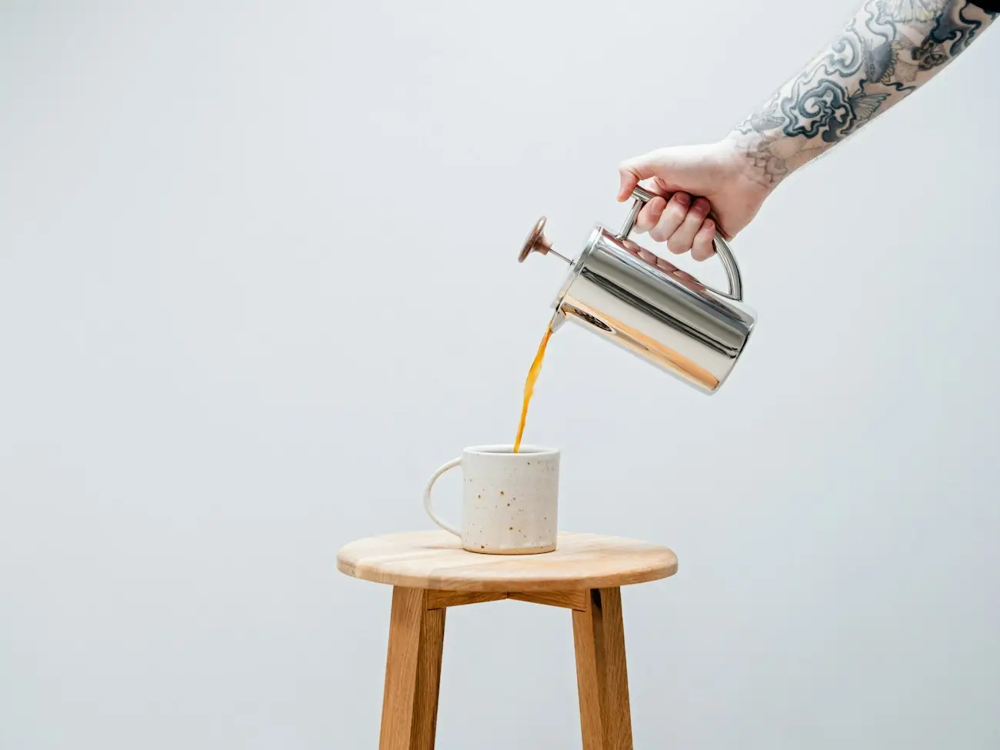
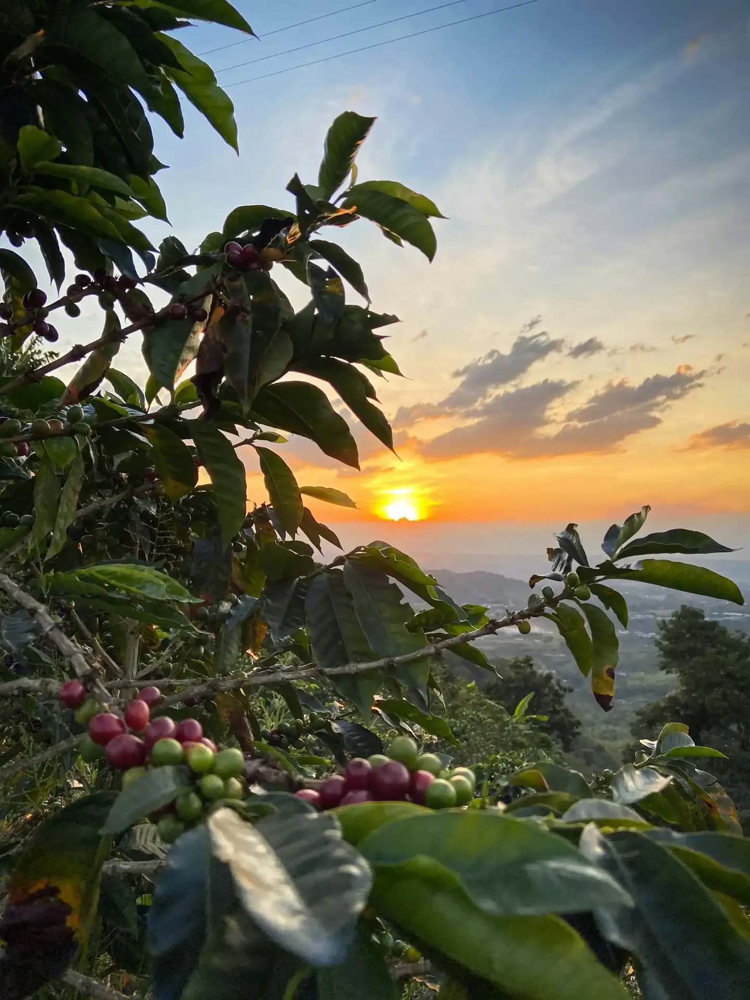
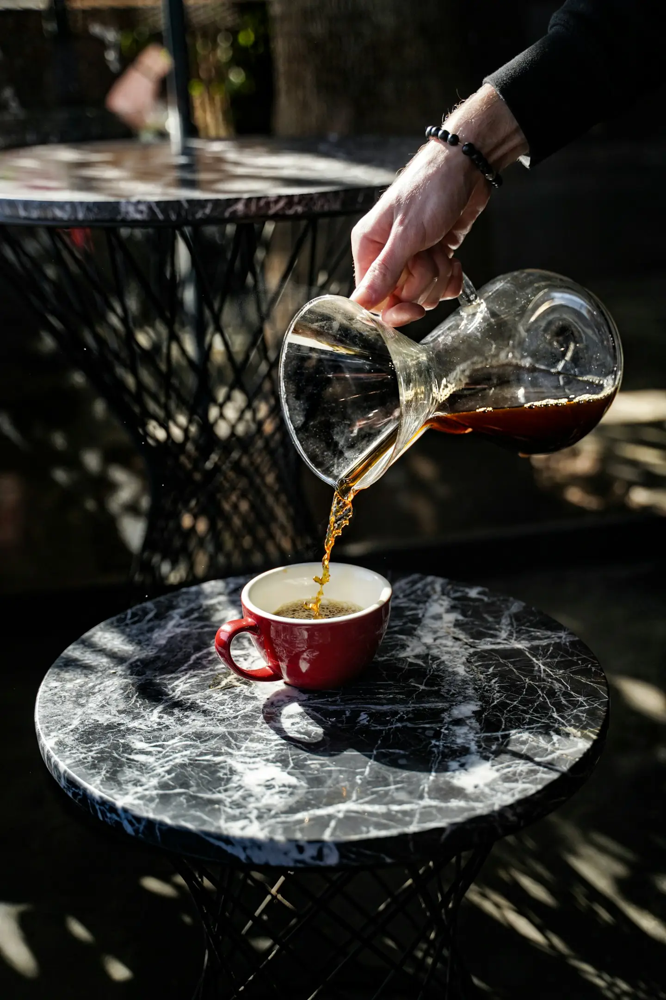

Grown at 1,800 metres on the slopes of Mt Kenya.

Mlima
Roasted in small batches in Nairobi, every Monday.
Shop the coffeeThe coffee
Whole bean or ground for how you brew. Roasted to order and posted within two days.
From cherry to cup

1Picked by hand
Only the reddest cherries, picked over several passes through the harvest.

2Washed and sun-dried
Fermented, washed in mountain water and dried on raised beds for three weeks.

3Roasted in Nairobi
Small batches, light enough to taste where it grew. Every bag is dated.

4Brewed by you
At its best between one and four weeks after roasting.

Every bag is traceable to the farm that grew it.
We buy directly from smallholder cooperatives in Nyeri and Kirinyaga, and pay above the auction price.
A good cup, every morning
For a pour-over or a cafetière.
- Coffee
- 15 g
- Water
- 250 ml
- Heat
- 94°C
- Time
- 3 min
- Grind medium-fine, like sea salt.
- Wet the grounds with a little water and wait 30 seconds.
- Pour the rest slowly in circles, then let it drain.
Never run out.
A fresh bag on your doorstep, as often as you like. Skip or cancel any time.
KSh 1,260 a bag, 10% off